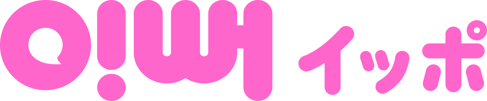

CONNECTED JOURNEY
플랫폼이 연결하는 5단계
환자에게는 이해하기 쉬운 결정 과정이 필요하고, 병원에는 상담부터 내원까지 이어지는 운영 기준이 필요합니다.
01 발견
환자가 병원과 시술 정보를 접합니다.
02 이해
콘텐츠와 안내를 통해 병원을 이해합니다.
03 상담
고민과 상태를 정리해 상담을 진행합니다.
04 예약·방문
일정, 비용, 준비사항을 확인합니다.
05 사후 연결
방문 이후 문의와 재연결을 지원합니다.
CORE PLATFORM
IPPEO 이뻐
이뻐는 일본 환자가 한국 미용의료를 더 안심하고 결정할 수 있도록 상담·통역·예약·방문 이후의 연결을 돕는 메디힘의 대표 플랫폼입니다.

더 많은 정보보다, 더 안전한 결정을
환자가 자신의 고민을 충분히 설명하고, 의료진의 안내를 이해하고, 방문 전 필요한 내용을 확인할 수 있도록 하나의 과정으로 연결합니다.
환자와 병원이 얻는 가치
FOR PATIENTS
환자에게는 결정의 불안을 낮춥니다.
- 병원과 시술 정보를 더 쉽게 이해할 수 있습니다.
- 통역 지원을 통해 자신의 고민을 정확히 전달할 수 있습니다.
- 상담, 예약, 방문 준비가 한 흐름으로 정리됩니다.
- 귀국 후 문의가 생겨도 병원과 다시 연결될 수 있습니다.
FOR HOSPITALS
병원에게는 운영의 단절을 줄입니다.
- 환자 문의 정보를 사전에 구조화할 수 있습니다.
- 상담, 예약, 내원 과정의 누락을 줄일 수 있습니다.
- 일본어 상담과 환자 응대 부담을 낮출 수 있습니다.
- 상담과 매출 데이터를 연결해 운영을 개선할 수 있습니다.
PLATFORM STRUCTURE
메디힘 플랫폼의 구성
플랫폼은 하나의 앱이나 화면만을 의미하지 않습니다. 마케팅, 상담, 예약, 운영, 데이터가 실제 현장에서 작동하도록 연결하는 전체 구조를 의미합니다.
병원 입점과 운영은 이렇게 시작합니다.
현재 운영 현황을 확인합니다.
진료과목, 목표 국가, 상담 인력, 운영 채널과 기존 문제를 확인합니다.
환자 상담 흐름을 설계합니다.
누가, 언제, 어떤 기준으로 상담하고 예약을 관리할지 정리합니다.
콘텐츠와 안내 정보를 준비합니다.
환자가 방문 전에 꼭 알아야 할 정보를 쉬운 언어로 정리합니다.
운영 데이터를 연결합니다.
문의, 상담, 예약, 내원 결과를 확인할 수 있도록 기준을 맞춥니다.